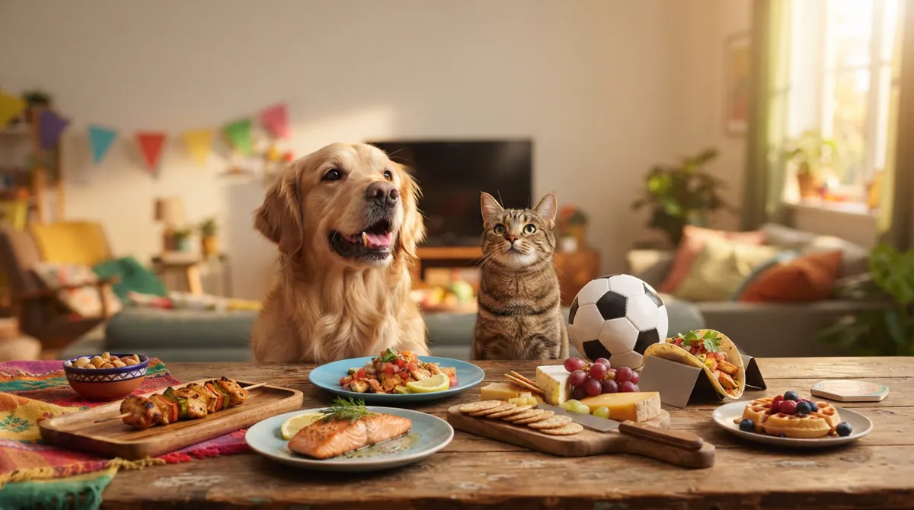
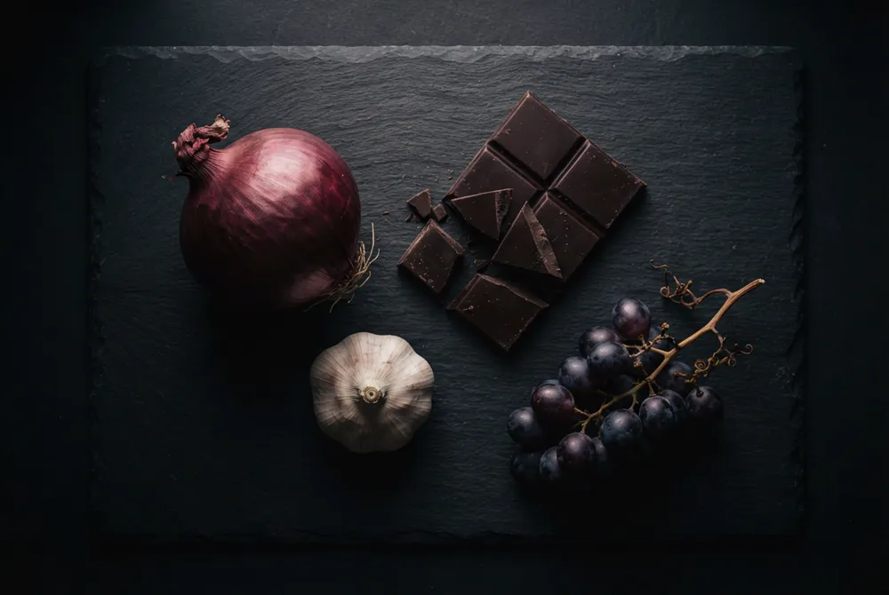
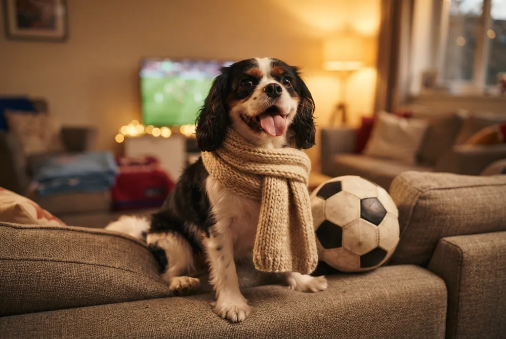
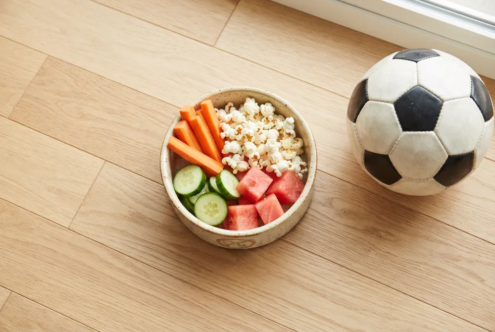

World Cup Snacks & Your Pet: 16 Countries, 16 Iconic Foods, What's Safe to Share

One tournament, sixteen kitchens, one very hopeful dog
Every match comes with a table — here's what your pet can (and can't) sneak from it.
Game day means food at snout height in sixteen different flavours — sizzling churrasco, gooey fondue, a Belgian chocolate box. Every watch party is a little buffet of temptation for a dog or cat working the room. The good news: several national dishes hide a genuinely great treat for your pet. The catch: a handful hide something that can send you to the emergency vet. Here's every World Cup nation's signature food, checked one country at a time — drawn from guidance by the ASPCA, the American Kennel Club and Pet Poison Helpline.
The three villains that crash almost every table
Across all sixteen kitchens, the same few ingredients cause the most trouble. Learn these three and you've already spotted 80% of the danger:
Onion & garlic
Toxic to dogs and cats in any form — raw, cooked, powdered. They're the base of sofrito, gravy, chimichurri, marinades and sauces. Signs are often delayed a day or more. Onion · Garlic
Chocolate
A true emergency — theobromine builds to toxic levels in pets. Belgium's specialty, and the halftime candy bowl everywhere. Risk calculator · Why

At a glance: all 16, sorted
| Country | Iconic dish | ✓ Safest share | ✕ Biggest hazard |
|---|---|---|---|
| 🇳🇴 Norway | Salmon | Plain cooked salmon | Raw/cured salmon |
| 🇨🇴 Colombia | Arepas | Plain corn arepa | Butter & salty cheese |
| 🇪🇬 Egypt | Koshari | Plain lentils, rice, chickpeas | Fried onions & garlic sauce |
| 🇵🇾 Paraguay | Chipa | Plain cooked egg | Dairy richness (mild) |
| 🇧🇷 Brazil | Churrasco | Plain grilled beef | Garlic marinade, bones, salt |
| 🇦🇷 Argentina | Asado | Plain grilled beef | Chimichurri (garlic) |
| 🇪🇸 Spain | Paella | Plain cooked shrimp | Onion-garlic sofrito base |
| 🏴 England | Fish & chips | Plain cooked fish, plain peas | Batter, salt, curry sauce |
| 🇲🇽 Mexico | Guacamole & tacos | Plain grilled meat, black beans | Guacamole (avocado+onion+garlic) |
| 🇺🇸 USA | Stadium hot dogs | Plain popcorn, plain burger bite | Chocolate, beer, the hot dog |
| 🇵🇹 Portugal | Bacalhau | Plain fresh fish, plain egg | Salt cod, garlic & onion |
| 🇨🇦 Canada | Poutine | Plain boiled potato | Gravy (onion, garlic, salt) |
| 🇫🇷 France | Cheese board | A little plain cheese, plain bread | Grapes & wine |
| 🇲🇦 Morocco | Tagine | Plain cooked chicken | Raisins & dried fruit |
| 🇨🇭 Switzerland | Cheese fondue | Plain undipped bread cube | Wine & garlic in the pot |
| 🇧🇪 Belgium | Chocolate & waffles | Plain waffle bite | Chocolate (emergency) |
🟢 The genuine wins
Dishes where a real, healthy treat is hiding — share the plain version and your pet joins the party.
🇳🇴 Norway Salmon
For once, the national dish is genuinely great for pets. Cooked salmon is a superb source of the omega-3s that support skin, coat and joints.
🇨🇴 Colombia Arepas
An arepa is basically a plain corn cake — one of the milder game-day foods. Cooked corn is fine for dogs (it's the cob that's dangerous, and there's no cob here).
🇪🇬 Egypt Koshari
Egypt's bowl of lentils, rice, pasta and chickpeas is built on genuinely dog-safe staples — a rare watch-party win at the base.
🇵🇾 Paraguay Chipa
Paraguay's cheesy bread is one of the gentler foods here — nothing toxic, just cheese, egg and starch.
🇧🇷 Brazil Churrasco
A Brazilian BBQ is a pet's dream: hours of sizzling meat at nose height. Plain grilled beef is one of the better things you can share.
🇦🇷 Argentina Asado & chimichurri
Endless grilled meat, and plain lean beef genuinely is a great share. The trouble is the garlic-heavy sauce.
🇪🇸 Spain Paella
Paella mixes pet-friendly stars (shrimp, chicken, rice, peas) on a base of exactly what pets shouldn't have. The ingredients can be safe while the finished dish isn't.
🏴 England Fish & chips
Strip back the batter and there's real shareable food here — and one side is a vet favourite.

🟡 Share carefully — one clear catch
A safe bite exists, but the headline version of the dish is a no. Set a plain piece aside first.
🇲🇽 Mexico Guacamole & tacos
Taco night is built around exactly the ingredients pets shouldn't have — but plain grilled taco meat is fine.
🇺🇸 USA Stadium hot dogs
The American lineup is mostly human-only — but two genuinely pet-safe snacks are hiding in the spread.
🇵🇹 Portugal Bacalhau (salt cod)
One word decides everything here: salt. Fresh cooked fish and plain egg are fine; the cured, salted, garlicky dish is not.
🇨🇦 Canada Poutine
Poutine stacks three things pets shouldn't have — fries, curds and gravy. The gravy is the real hazard, so this is a clear "keep it human" dish.
🔴 Guard the table — real toxins
These four lead with genuinely dangerous foods. Keep them up high and out of reach.
🇫🇷 France Cheese board
A cheese board looks harmless, but the hidden danger isn't the cheese — it's the grapes next to it.
🇲🇦 Morocco Tagine & couscous
The fragrant sweet note in many tagines is the trap: dried fruit like raisins, toxic to dogs even in small amounts.
🇨🇭 Switzerland Cheese fondue
It looks like just melted cheese — but there's wine and garlic melted invisibly into the pot.
🇧🇪 Belgium Chocolate & waffles
Belgium is famous for the single most dangerous thing at any watch party: chocolate. This is the one that can become a real emergency.
The game-day move that works for every match
You don't have to police the whole room. Before kickoff, prep a little pet snack bowl — a few carrot sticks, plain air-popped popcorn, cucumber slices and frozen watermelon or blueberry cubes. When the negotiation eyes start during the match, you've got an answer that isn't "no," and your pet celebrates every goal without a single risky bite. Not sure about something on your own table? Check any food in seconds before you share it.

Frequently asked questions
What's the safest World Cup food to share with a dog?
Plain cooked salmon (Norway) is a standout — lean protein and skin-and-coat omega-3s — as long as it's fully cooked, never raw. Plain grilled beef (Brazil/Argentina), plain cooked shrimp (Spain) and plain cooked egg (Paraguay/Portugal) are also excellent, in small unseasoned amounts.
Which World Cup dishes are the most dangerous for pets?
The four to guard closely are Belgium (chocolate), France (grapes on the cheese board), Morocco (raisins in the tagine) and Switzerland (wine and garlic in the fondue). Chocolate, grapes and raisins can all become emergencies.
My dog grabbed something off the table during the game — what do I do?
If it involved chocolate, grapes, raisins, xylitol or alcohol, treat it as urgent: call your vet or a poison line (ASPCA 888-426-4435) with your dog's weight. For onion or garlic (sauces, gravy, marinades), call too — the signs can take a day or more to appear, so don't wait for symptoms.
Can cats have any of this food?
Yes, but keep it tiny and plain — a shred of plain cooked salmon, beef or shrimp. Cats are more sensitive to onion and garlic than dogs, and curious cats go for abandoned drink cups, so keep alcohol covered and sauces out of counter range.
Is it OK to give my pet a little of the "safe" dishes every match?
An occasional plain bite is fine, but treats should stay within about 10% of your pet's daily calories. Lean plain protein and crunchy veg are the best picks; salty, fatty and processed foods add up fast in a small body.
By the CanMyPet Editorial Team · Reviewed against guidance from the ASPCA Animal Poison Control, the American Kennel Club (AKC) and Pet Poison Helpline · Published July 2026.